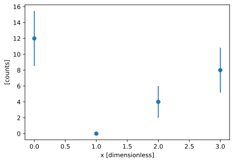
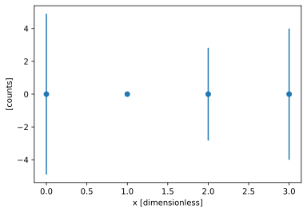
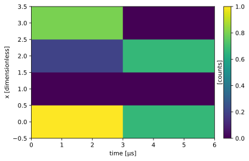

Computation with Binned Data#
As described in Binned Data Scipp can handle certain types of sparse or scattered data such as event data, i.e., data that cannot directly be represented as a multi-dimensional array. This could, e.g., be used to store data from an array of sensors/detectors that are read out independently, with potentially widely varying frequency.
Scipp supports two classes of operations with binned data.
Bin-centric arithmetic treats every bin as an element to, e.g., apply a different scale factor to every bin.
Event-centric arithmetic considers the individual events within bins. This allows for operation without the precision loss that would ensue from simply histogramming data.
Overview and Quick Reference#
Before going into a detailed explanation below we provide a quick reference:
Unary operations such as
sin,cos, orsqrtwork as normal.Comparison operations such as
less(<) are not supported.Binary operations such as
+work in principle, but usually not if both operands represent event data. In that case, see table below.
Given two data arrays a and b, equivalent operations are:
Dense data operation |
Binned data equivalent |
Comment |
|---|---|---|
|
|
if both |
|
|
if both |
|
|
if both |
|
|
if both |
|
|
|
|
not available (but see comment below) |
|
|
|
|
|
|
|
|
|
While above we list mean, min, max, and others as “not available”, note that this refers to an equivalent function preserving data as binned data. sum, mean, min, and max all do work on binned data, but return dense data.
Concepts#
Before assigning events to bins, we can initialize them as a single long list or table. In the simplest case this table has just a single column, i.e., it is a Scipp variable:
[1]:
import numpy as np
import scipp as sc
table = sc.array(
dims=['event'], values=[0, 1, 3, 1, 1, 1, 42, 1, 1, 1, 1, 1], dtype='float64'
)
sc.table(table)
[1]:
| Data |
|---|
| [𝟙] |
| 0.000 |
| 1.000 |
| 3.000 |
| 1.000 |
| 1.000 |
| 1.000 |
| 42.000 |
| 1.000 |
| 1.000 |
| 1.000 |
| 1.000 |
| 1.000 |
The events in the table can then be mapped into bins:
[2]:
begin = sc.array(dims=['x'], values=[0, 6, 6, 8], unit=None)
end = sc.array(dims=['x'], values=[6, 6, 8, 12], unit=None)
var = sc.bins(begin=begin, end=end, dim='event', data=table)
sc.show(var)
var
[2]:
- (x: 4)float64𝟙binned data [len=6, len=0, len=2, len=4]
dim='event', content=Variable(dims=(event: 12), dtype=float64, unit=dimensionless)
Each element of the resulting “bin variable” references a section of the underlying table:
[3]:
sc.table(var['x', 0].value)
[3]:
| Data |
|---|
| [𝟙] |
| 0.000 |
| 1.000 |
| 3.000 |
| 1.000 |
| 1.000 |
| 1.000 |
[4]:
sc.table(var['x', 1].value)
[4]:
| Data |
|---|
| [𝟙] |
[5]:
sc.table(var['x', 2].value)
[5]:
| Data |
|---|
| [𝟙] |
| 42.000 |
| 1.000 |
Bin-centric arithmetic#
Elements of binned variables are views of slices of a variable or data array. An operation such as multiplication of a binned variable with a dense array thus computes the product of the bin (a variable view or data array view) with a scalar element of the dense array. In other words, operations between variables or data arrays broadcast dense data to the lists held in the bins:
[6]:
scale = sc.arange('x', 2.0, 6)
var *= scale
var['x', 0].values
[6]:
- (event: 6)float64𝟙0.0, 2.0, ..., 2.0, 2.0
Values:
array([0., 2., 6., 2., 2., 2.])
[7]:
var['x', 1].values
[7]:
- (event: 0)float64𝟙
Values:
array([], dtype=float64)
[8]:
var['x', 2].values
[8]:
- (event: 2)float64𝟙168.0, 4.0
Values:
array([168., 4.])
In practice scattered data requires more than one “column” of information. Typically we need at least one coordinate such as an event time stamp in addition to weights. If each scattered data point (event) corresponds to, e.g., a single detected neutron then the weight is 1. As above, we start by creating a single table containing all events:
[9]:
times = sc.array(
dims=['event'],
unit='us', # micro second
values=[0, 1, 3, 1, 1, 1, 4, 1, 1, 2, 1, 1],
dtype='float64',
)
weights = sc.ones(dims=['event'], unit='counts', shape=[12], with_variances=True)
table = sc.DataArray(data=weights, coords={'time': times})
sc.table(table)
table
[9]:
- event: 12
- time(event)float64µs0.0, 1.0, ..., 1.0, 1.0
Values:
array([0., 1., 3., 1., 1., 1., 4., 1., 1., 2., 1., 1.])
- (event)float64counts1.0, 1.0, ..., 1.0, 1.0σ = 1.0, 1.0, ..., 1.0, 1.0
Values:
array([1., 1., 1., 1., 1., 1., 1., 1., 1., 1., 1., 1.])
Variances (σ²):
array([1., 1., 1., 1., 1., 1., 1., 1., 1., 1., 1., 1.])
This table is then mapped into bins. The resulting “bin variable” can, e.g., be used as the data in a data array, and can be combined with coordinates as usual:
[10]:
var = sc.bins(begin=begin, end=end, dim='event', data=table)
a = sc.DataArray(data=var, coords={'x': sc.Variable(dims=['x'], values=np.arange(4.0))})
a
[10]:
- x: 4
- x(x)float64𝟙0.0, 1.0, 2.0, 3.0
Values:
array([0., 1., 2., 3.])
- (x)float64countsbinned data [len=6, len=0, len=2, len=4]
dim='event', content=DataArray( dims=(event: 12), data=float64[counts], coords={'time':float64[µs]})
In practice we rarely use sc.bins (which requires begin and end indices for each bin and an appropriately sorted table) to create binned data. For creating binned variables sc.bins is the only option, but for binning data arrays we typically bin based on the meta data of the individual data points, i.e., the coord columns in the table of scattered data. Use scipp.bin (not sc.bins) and/or
scipp.group as described in Binned Data.
In the graphical representation of the data array we can see the dense coordinate (green), and the bins (yellow):
[11]:
sc.show(a)
As before, each bin references a section of the underlying table:
[12]:
sc.table(a['x', 0].value)
[12]:
| Coordinates | Data |
|---|---|
| time [µs] | [counts] |
| 0.000 | 1.000±1.000 |
| 1.000 | 1.000±1.000 |
| 3.000 | 1.000±1.000 |
| 1.000 | 1.000±1.000 |
| 1.000 | 1.000±1.000 |
| 1.000 | 1.000±1.000 |
[13]:
sc.table(a['x', 1].value)
[13]:
| Coordinates | Data |
|---|---|
| time [µs] | [counts] |
[14]:
sc.table(a['x', 2].value)
[14]:
| Coordinates | Data |
|---|---|
| time [µs] | [counts] |
| 4.000 | 1.000±1.000 |
| 1.000 | 1.000±1.000 |
Event-centric arithmetic#
Complementary to the bin-centric arithmetic operations, which treat every bin as an element, we may need more fine-grained operations that treat events within bins individually. Scipp provides a number of such operations, defined in a manner to produce a result equivalent to that of a corresponding operation for histogrammed data, but preserving events and thus keeping the options of, e.g., binning to a higher resolution or filtering by meta data later. For example, addition of histogrammed data would correspond to concatenating event lists of individual bins.
The following operations are supported:
“Addition” of data arrays containing event data in bins. This is achieved by concatenating the underlying event lists.
“Subtraction” of data arrays containing event data in bins. This is performed by concatenating with a negative weight for the subtrahend.
“Multiplication” of a data array containing event data in bins with a data array with dense, histogrammed data. The weight of each event is scaled by the value of the corresponding bin in the histogram. Note that in contrast to the bin-centric operations the histogram may have a different (higher) resolution than the bin size of the binned event data. This operation does not match based on the coords of the bin but instead considers the more precise coord values of the individual events, i.e., the operation is performances based on the meta data column in the underlying table.
“Division” of a data array containing event data in bins by a data array with dense, histogrammed data. This is performed by scaling with the inverse of the denominator.
Note:
These operations, in particular multiplication and division, are only interchangeable with histogramming if the variances of the “histogram” operand are negligible. If these variances are not negligible the operation on the event data would introduce correlations in the error bars of the individual events. Scipp has no way of tracking such correlations and therefore these operations raise VariancesError to avoid silent underestimation of uncertainties. See our publication Systematic underestimation of uncertainties by widespread neutron-scattering data-reduction software for more background.
Addition#
[15]:
sc.show(a['x', 2].value)
a.bins.concatenate(a, out=a)
sc.show(a['x', 2].value)
a.bins.sum().plot()
[15]:

Subtraction#
[16]:
zero = a.copy()
sc.show(zero['x', 2].value)
zero.bins.concatenate(-zero, out=zero)
sc.show(zero['x', 2].value)
zero.bins.sum().plot()
[16]:

Multiplication and division#
We prepare a histogram that will be used to scale the event weights:
[17]:
time_bins = sc.array(dims=['time'], unit=sc.units.us, values=[0.0, 3.0, 6.0])
weight = sc.array(dims=['time'], values=[10.0, 3.0])
hist = sc.DataArray(data=weight, coords={'time': time_bins})
hist
[17]:
- time: 2
- time(time [bin-edge])float64µs0.0, 3.0, 6.0
Values:
array([0., 3., 6.])
- (time)float64𝟙10.0, 3.0
Values:
array([10., 3.])
The helper sc.lookup provides a wrapper for a discrete “function”, given by a data array depending on a specified dimension. The binary arithmetic operators on the bins property support this function-like object:
[18]:
a.bins /= sc.lookup(func=hist, dim='time')
a.hist(time=time_bins).plot()
[18]:

As noted above, operations that would introduce correlations due to a broadcast raise an exception. In this case, using a histogram bin value with variances for multiple events in that bin triggers such an error:
[19]:
weight = sc.array(dims=['time'], values=[10.0, 3.0], variances=[10.0, 3.0])
hist = sc.DataArray(data=weight, coords={'time': time_bins})
a.bins /= sc.lookup(func=hist, dim='time')
---------------------------------------------------------------------------
VariancesError Traceback (most recent call last)
Cell In[19], line 3
1 weight = sc.array(dims=['time'], values=[10.0, 3.0], variances=[10.0, 3.0])
2 hist = sc.DataArray(data=weight, coords={'time': time_bins})
----> 3 a.bins /= sc.lookup(func=hist, dim='time')
File ~/work/scipp/scipp/.pixi/envs/docs/lib/python3.12/site-packages/scipp/core/bins.py:297, in Bins.__itruediv__(self, lut)
296 def __itruediv__(self, lut: Lookup) -> Bins[_O]: # noqa: PYI034
--> 297 _cpp.buckets.scale(self._obj, _cpp.reciprocal(lut.func), lut.dim)
298 return self
VariancesError: Cannot broadcast object with variances as this would introduce unhandled correlations. Input dimensions were:
(x: 4) variances=False
(x: 4) variances=False
() variances=False
() variances=True
See https://doi.org/10.3233/JNR-220049 for more background.